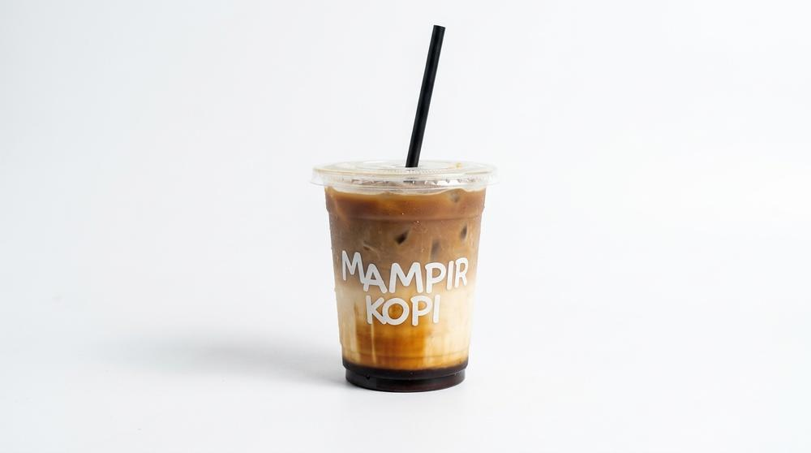
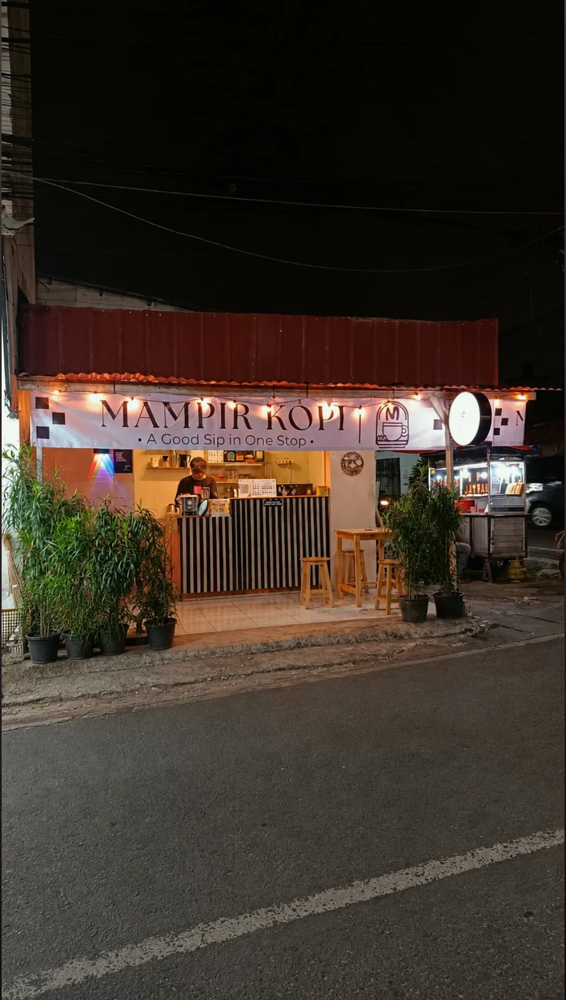
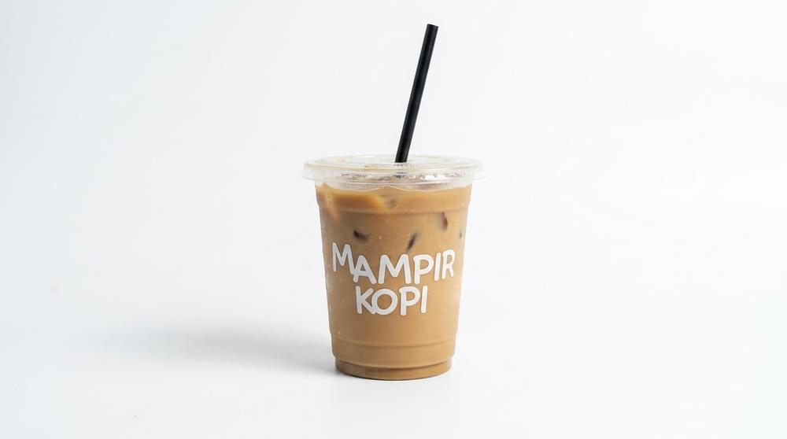
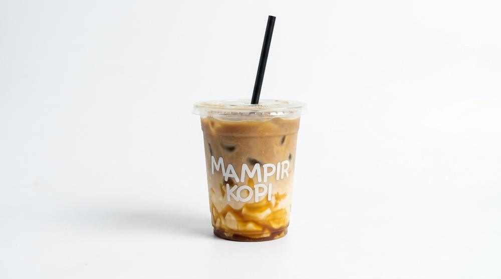

Mampir Kopi · Ruang untuk Menikmati
Temukan kopi untuk menemani harimu.
Jelajahi pilihan kopi dan minuman kami. Masuk atau daftar untuk mulai memesan.
Jelajahi Menu
Tentang Mampir Kopi
Tempat singgah di Kebon Jeruk

Awalnya bukan kedai. Cuma kebiasaan menyeduh kopi untuk tetangga dan teman yang mampir ke teras kecil kami di Sukabumi Selatan. Yang datang makin banyak, sampai akhirnya teras itu jadi kedai.
Menunya tetap sederhana: kopi susu andalan, kopi tubruk, manual brew, dan wedang jahe buat hari hujan. Semua diseduh per pesanan, harganya tetap bersahabat.
Selengkapnya tentang kami- Alamat
- Jl. Ff No. 24, Sukabumi Selatan, Kebon Jeruk, Jakarta Barat 11560
- Jam buka
- Setiap hari, 08.00–22.00 WIB
- Pesan
- Ambil di kasir, diantar, atau COD — lewat website ini
Yang paling sering dipesan
Andalan kami



Yang kami seduh
Galeri
Mampir dan sapa kami
Lokasi kami
Jl. Ff No. 24, RT.7/RW.5, Sukabumi Selatan, Kebon Jeruk, Jakarta Barat, DKI Jakarta 11560
Buka rute di Google MapsPeta tidak dapat dimuat.
Buka rute di Google Maps